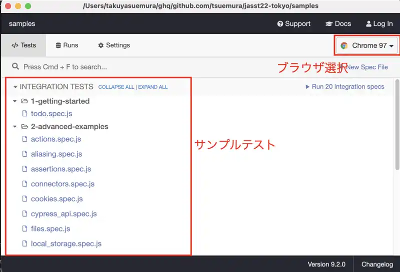
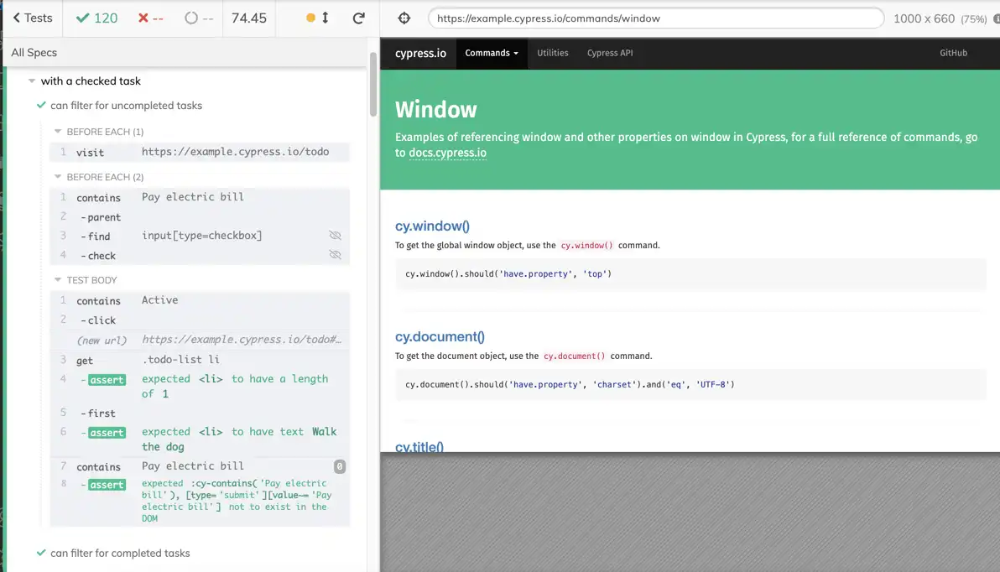
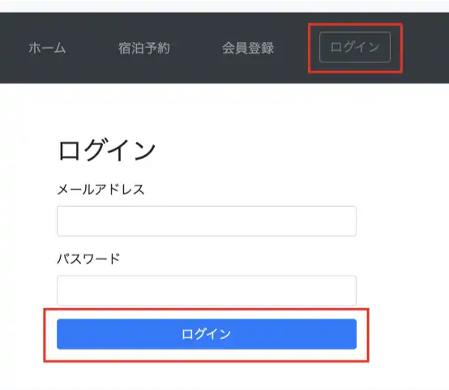
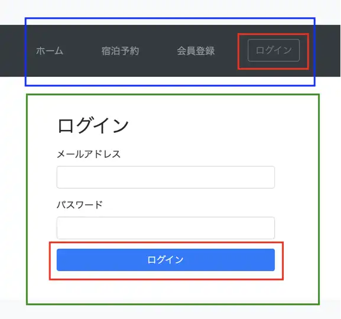

60分で学ぶ実践E2Eテスト（実装編）
はじめに
E2Eテストコード、書いてますか？
何に困ってますか？
- 書きたいと思ってるんだけど、ググるといろんなやり方が出てきて、どれが良いやり方なのかわからない
- 昔チャレンジしたんだけど、メンテナンスが上手く行かなかった
- 勉強する時間がない、正解を教えてほしい
今日話すこと
時間もあんまり無いので、 個人的ベストプラクティス にフォーカスしてお伝えします
- 爆速でセットアップしてテストコードを書き始める方法
- 最近流行ってるライブラリ
- 可読性の高いテストコードの書き方
- サクッと運用に載せていく方法
利用するライブラリ
Cypress
デベロッパーフレンドリーなE2Eテストツール
- Chrome/Firefoxに対応
- テストコードの作成やデバッグを楽にする機能がいろいろある
インストール
NodeJSのインストールが必要です
Macの場合は以下
$ brew install node
インストール
$ mkdir jasst22tokyo
$ cd jasst22tokyo
$ npm install cypress @testing-library/cypress
起動
$ npx cypress open
初回起動時に設定ファイルとサンプルのテストコードが生成されます


テストを実行すると実行結果が細かく表示されます
ステップ1: Cypress Studio でテストコードを自動記録する
Cypress Studio とは
- テストコードを自動記録するためのツール
- テスト結果から続けてテストコードを追記してくれる
テストシナリオ
- https://hotel.testplanisphere.dev/ja/index.html にアクセスする
ログインをクリックするメールアドレスにichiro@example.comと入力するパスワードにpasswordと入力するログインをクリックする
まずはテストを書く土台を作っていく
integration フォルダ内に login.js を作り、以下のように記述する
describe('Login', () => {
it('as a premium member', () => {
cy.visit("https://hotel.testplanisphere.dev/ja/index.html");
// ここから先は自動記録でやってもらう
})
})
Cypressを起動する
$ npx cypress open
自動記録する
describe('Login', () => {
it('as a premium member', () => {
cy.visit("https://hotel.testplanisphere.dev/ja/index.html");
/* ==== Generated with Cypress Studio ==== */
cy.get('#login-holder > .btn').click();
cy.get('#email').clear();
cy.get('#email').type('ichiro@example.com');
cy.get('#password').clear();
cy.get('#password').type('password');
cy.get('#login-button').click();
/* ==== End Cypress Studio ==== */
})
})
ちょっと読みにくいので加工しましょう
コメントアウトされている箇所は消しても大丈夫
describe('Login', () => {
it('as a premium member', () => {
cy.visit("https://hotel.testplanisphere.dev/ja/index.html");
/* ==== Generated with Cypress Studio ==== */
cy.get('#login-holder > .btn').click();
// cy.get('#email').clear();
cy.get('#email').type('ichiro@example.com');
// cy.get('#password').clear();
cy.get('#password').type('password');
cy.get('#login-button').click();
/* ==== End Cypress Studio ==== */
})
})
ステップ2: コードを読みやすくする
- https://hotel.testplanisphere.dev/ja/index.html にアクセスする
ログインをクリックするメールアドレスにichiro@example.comと入力するパスワードにpasswordと入力するログインをクリックする
describe('Login', () => {
it('as a premium member', () => {
cy.visit("https://hotel.testplanisphere.dev/ja/index.html");
cy.get('#login-holder > .btn').click();
cy.get('#email').type('ichiro@example.com');
cy.get('#password').type('password');
cy.get('#login-button').click();
})
})
❌ 元のシナリオとテストコードの対応が取れていない
理想はこう書きたい
describe('Login', () => {
it('as a premium member', () => {
cy.visit("https://hotel.testplanisphere.dev/ja/index.html");
cy.get('ログイン').click();
cy.get('メールアドレス').type('ichiro@example.com');
cy.get('パスワード').type('password');
cy.get('ログイン').click();
})
})
cy.contains() を使う
- https://hotel.testplanisphere.dev/ja/index.html にアクセスする
ログインをクリックするメールアドレスにichiro@example.comと入力するパスワードにpasswordと入力するログインをクリックする
describe('Login', () => {
it('as a premium member', () => {
cy.visit("https://hotel.testplanisphere.dev/ja/index.html");
cy.contains('ログイン').click();
cy.contains('メールアドレス').type('ichiro@example.com')
cy.contains('パスワード').type('password')
cy.contains('ログイン').click();
})
})
元のシナリオと同じ書き方に出来た
あいまいな部分を排除する
よく見ると「ログイン」というボタンが2つありますね

構造に着目しましょう

ユーザーはナビゲーションバーとフォームの「ログイン」ボタンを使い分けているはず
要素選択も同じようにします
within() を使う
describe('Login', () => {
it('as a premium member', () => {
cy.visit("https://hotel.testplanisphere.dev/ja/index.html");
// ナビゲーションバーの中の要素を操作
cy.get('nav').within(() => {
cy.contains('ログイン').click();
})
// フォームの中の要素を操作
cy.get('form').within(() => {
cy.contains('メールアドレス').type('ichiro@example.com')
cy.contains('パスワード').type('password')
cy.contains('ログイン').click();
})
})
})